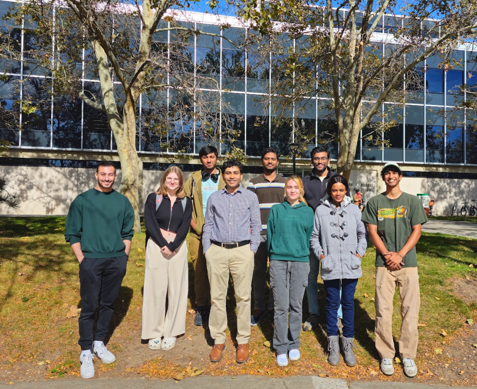

Hello, I'm Vineet Pandey.
I'm a human-computer interaction (HCI) researcher and an Assistant Professor in the Kahlert School of Computing at the University of Utah. Starting Spring 2025, I am also a Responsible AI Faculty Fellow at the university.
I build human-centered computing tools that expand and improve the interface between communities and institutional experts, especially in science and medicine. My research supports motivated communities in performing scientific and medical work that is personally meaningful, institutionally relevant, and that advances our understanding of health, disorders, and public involvement in institutional processes. By intervening at three levels––individual tools, social platforms, and institutional processes––my research finds direct applications in digital health and citizen science.
All of my research builds on collaborations with real-world communities and institutional experts to design new ways of creating and acting on evidence.
As a Postdoctoral researcher at MIT (2022-23), I explored novel characterizations of online social movements around clinical trials in neurodegenerative disorders - in collaboration with Arvind Satyanarayan (HCI, Visualization) and Graham Jones (Cultural and Linguistic Anthropology).
(First paper in re-preparation)
As a Postdoctoral Fellow at Harvard University (2020-22), I collaborated with neurologists at Mass General Hospital and multiple rare disorder communities (SCAs, ALS, Ataxia-telangiectasia) to advance our understanding of neurological disorders with remote health assessment tools.
(ACM TACCESS 2023, The Cerebellum 2022, Brain Communications 2023).
During my Ph.D. in Computer Science from UC San Diego (2013-19), I worked with microbiologists at the American Gut Project and fermenters to support community-led experimentation with novel online platforms. I was lucky to receive wisdom from Jim Hollan, Rob Knight, and Don Norman.
(ACM CHI 2021, Learning@Scale 2018, CHI 2017, Defense Video)
My dissertation was awarded the 2019 School of Engineering Henry Booker Award for Exemplary Ethical Engineering.
Recent work
Research Group for 2025 Fall (August-December)
| PhD students | |
| Janet Ikhile | Does fine-finger tracking on touchscreens yield reliable, valid, actionable knowledge for telemedicine/remote clinical work? |
| Mutaz Hennawi | How to run quick and effective co-design sessions with busy specialists in healthcare? |
| Nastaran Jadidi | How might we design social platforms that support affected communities participate in relevant policymaking? |
| Sujit K Kamaraj | How are educators integrating AI in their teaching? |
| Sujit, Yuvraj | Does repurposing bioinformatics tools/datasets for patient-led research work? |
| BS MS students | |
| Asma Khan
(with Janet) |
What do Occupational Therapists want and need from digital health tools for clinical work in motor assessment? |
| Carly Atwell
Comp BS MS 25 |
TBD PS: Carly is applying for PhD programs! (carly.atwell@utah.edu) |
| BS students (thesis/capstone/UROP) | |
| Megan Genetti
(Capstone) BS CE |
What challenges do people face when using prosthetic implants? |
| Yuvraj Malik
(UROP) BS CS |
How fast do people demonstrate practice effects in touchscreen-based remote health assessments? |
2025 Summer

2024 Fall

2024 Summer

2024 Spring, 2023 Fall


Group Alumni
| MS students | |
| Jenny Yijun Zhan (MSD) | → Production Engineer, Meta Designing software for caregiver-validated remote health assessments |
| Gunasekhar Athuluri (CS MS) | Visualizing institutional datasets for patient-led hypothesis-testing |
BS students |
|
| NSF REU: Research Experiences for Undergrads: Intelligent Computation |
Alex Goff (CS, Summer 25, University of Utah) Hannah Larsen (CS, Summer 25, University of Utah) Vivian Zheng (CS, Summer 25, Stony Brook, NSF REU) Belén Edgar (CS, Northwestern, Summer 24) Timi Omoteso (CS, Summer 24, Georgia Tech) |
Price College Engineering Scholars Program |
Logan Wood (CS, Spring 24) Kunal Kamtekar (CS, Spring 24) Olivia Styler (CS, Spring 25) |
High School students |
|
| Price College High School Summer Research Internship |
Kevin Siju Eappen (Hillcrest High School, Summer 25) Om Sanghvi (Hillcrest High School, Summer 25) Lincoln Gierisch (Itineris Early College High School, Summer 24) Silas Fay (Academy for Math, Engineering and Science, Summer 24) |
| University of Utah Science & Engineering Fair | Lavanya Mohnani (Hillcrest High School, Spring 24). First Prize at Computer Science & Applied Computational Methods |
Committee member (PhD, MS, BS)
| Maxim Lisnic | Computing PhD: Data-driven Misinformation (Advisors: Marina Kogan, Alex Lex)
→ Assistant Professor, Worcester Polytechnic Institute (WPI), MA |
| Noelle Brown | Computing PhD: Ethics in Computing (Advisor: Eliane Wiese)
→ Assistant Professor/Lecturer, University of Utah |
| Caden Hamrick | ECE PhD: TBD (Advisor: Jacob George) |
Sujit K. Kamaraj |
(Chair) CS MS: Crossroads: Understanding Cognitive Activity through Fine-Finger Tracking on Touchscreens |
| Naman Rastogi | CS MS: Platform Migration in Online Communities |
| Semil Jain | CS MS: Citizen Science on CloudLab |
| Khawar Murad Ahmed | Computing MS: Mixed-methods studies for characterizing online discourse |
Brennan Cook |
(Chair) Data Science BS: Optimal Strategies in Basketball |
The original page was designed by Manjeet Singh Sawhney.